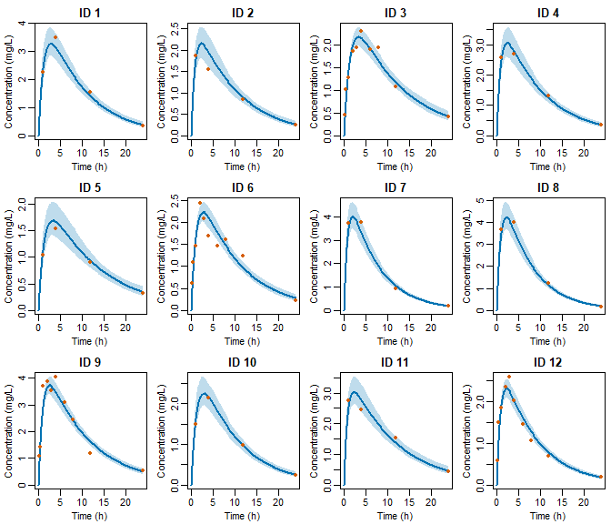
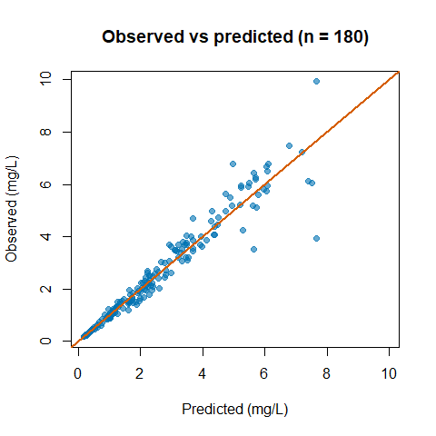
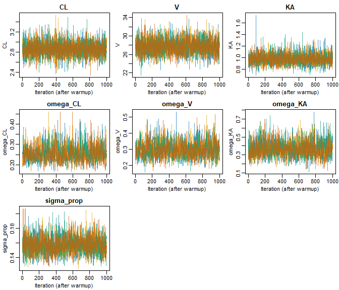
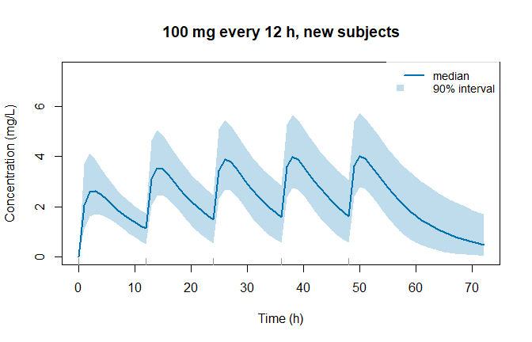

bayespk fits Bayesian population pharmacokinetic (PK) models without
writing Stan. There are three steps: describe the model with
pk_model(), fit it with bpk_fit(), and look at
the results with summary(), plot() and
predict().
This vignette uses bpk_example, a simulated study that
comes with the package: 30 subjects with a single oral dose of 100 or
200 mg, with rich sampling for every third subject and sparse sampling
for the others.
library(bayespk)
head(bpk_example, 6)
#> ID TIME AMT DV EVID WT SEX
#> 1 1 0 100 NA 1 69.0 1
#> 2 1 1 0 2.240 0 69.0 1
#> 3 1 4 0 3.470 0 69.0 1
#> 4 1 12 0 1.550 0 69.0 1
#> 5 1 24 0 0.356 0 69.0 1
#> 6 2 0 100 NA 1 91.9 0The data are in NONMEM format: one row per dose
(EVID = 1, AMT) or observation
(EVID = 0, DV). Other columns such as
WT are covariates. RATE, MDV,
ADDL and II are read if present, and
"." counts as missing.
1. Describe the model
mod <- pk_model("1cmt", route = "oral", iiv = c("CL", "V", "KA"), error = "proportional")
mod
#> bayespk model: 1cmt oral
#> parameters: CL, V, KA
#> between-subject variability (log-normal): CL, V, KA
#> residual error: proportionaliiv lists the parameters with log-normal between-subject
variability. Structures are "1cmt" and "2cmt";
routes are "iv" (bolus, or infusion from RATE)
and "oral".
2. Fit
fit <- bpk_fit(mod, bpk_example, chains = 4, cores = 4, seed = 1)
fit
#> bayespk model: 1cmt oral
#> parameters: CL, V, KA
#> between-subject variability (log-normal): CL, V, KA
#> residual error: proportional
#> data: 30 subjects, 180 observations, 30 doses
#> sampling: 4 chains, 33.9 s
#> variable mean sd q5 q50 q95 rhat ess_bulk ess_tail
#> CL 2.860 0.1420 2.630 2.860 3.100 1.00 6530 2740
#> V 27.700 1.6400 25.100 27.700 30.600 1.00 4760 3040
#> KA 0.976 0.0905 0.840 0.971 1.130 1.00 4750 2980
#> omega_CL 0.257 0.0405 0.199 0.252 0.330 1.01 910 1500
#> omega_V 0.298 0.0486 0.226 0.295 0.384 1.00 1050 2090
#> omega_KA 0.365 0.0849 0.238 0.358 0.515 1.00 1490 2030
#> sigma_prop 0.157 0.0117 0.139 0.156 0.176 1.00 2030 2860Priors not given are set to weakly informative defaults; they are
listed with the fit (fit$priors). The model is precompiled,
so nothing is compiled here. This fit took 34 seconds with 4 chains on 4
cores.
bpk_fit() warns about divergent transitions, R-hat above
1.01, low effective sample size and chains that settled in different
modes. The numbers are also available directly:
d <- bpk_diagnostics(fit)
d[c("divergent", "rhat_max", "ess_bulk_min")]
#> $divergent
#> [1] 0
#>
#> $rhat_max
#> [1] 1.007923
#>
#> $ess_bulk_min
#> [1] 909.95313. Results
summary(fit)
#> variable mean sd q5 q50 q95 rhat ess_bulk ess_tail
#> CL 2.860 0.1420 2.630 2.860 3.100 1.00 6530 2740
#> V 27.700 1.6400 25.100 27.700 30.600 1.00 4760 3040
#> KA 0.976 0.0905 0.840 0.971 1.130 1.00 4750 2980
#> omega_CL 0.257 0.0405 0.199 0.252 0.330 1.01 910 1500
#> omega_V 0.298 0.0486 0.226 0.295 0.384 1.00 1050 2090
#> omega_KA 0.365 0.0849 0.238 0.358 0.515 1.00 1490 2030
#> sigma_prop 0.157 0.0117 0.139 0.156 0.176 1.00 2030 2860The data were simulated with CL = 3 L/h, V = 30 L and KA = 1.2 1/h for a 70 kg subject, with between-subject SDs of 0.3, 0.2 and 0.4 and a proportional residual SD of 0.15. Estimates differ from these values partly because 30 simulated subjects are a sample: in this sample, the geometric mean of the individual KA values is 1.13, at the upper end of the 90% interval. The model above also ignores weight, so the between-subject SDs of CL and V also absorb the weight effect; the covariates vignette adds it.
Individual fits, one panel per subject (median and 90% interval, observations in red):
plot(fit, xlab = "Time (h)", ylab = "Concentration (mg/L)")
plot of chunk individual
Observed against predicted concentrations:
plot(fit, type = "obs_pred", xlab = "Predicted (mg/L)", ylab = "Observed (mg/L)")
plot of chunk obs-pred
Trace plots of the population parameters; overlapping chains mean they mixed:
plot(fit, type = "trace")
plot of chunk trace
4. Predict a new regimen
predict() with a regimen simulates new
subjects from the posterior. The prediction includes uncertainty in the
population parameters and between-subject variability.
type = "typical" drops the between-subject variability, and
residual = TRUE adds residual error. Here, 100 mg every 12
hours for 5 doses:
pred <- predict(fit, regimen = dose_regimen(100, ii = 12, n = 5), times = seq(0, 72, 1))
head(pred)
#> TIME q5 q50 q95
#> 1 0 0.000000 0.000000 0.000000
#> 2 1 1.106982 2.035577 3.680314
#> 3 2 1.597981 2.598105 4.115263
#> 4 3 1.701380 2.631903 3.871357
#> 5 4 1.675074 2.486713 3.532899
#> 6 5 1.578053 2.306595 3.200682
plot(pred, main = "100 mg every 12 h, new subjects", xlab = "Time (h)", ylab = "Concentration (mg/L)")
plot of chunk regimen
pk_conc() computes concentrations for given parameters
without a fit, for example to check a regimen:
pk_conc(c(1, 4, 12), dose_regimen(100), c(CL = 3, V = 30, KA = 1.2), "1cmt", "oral")
#> [1] 2.195066 2.407601 1.095250Next
- Covariates and informative priors: weight effects, borrowing information from earlier studies, and prior sensitivity.
- Two-compartment models and regimen comparison: infusion data, comparing dosing regimens, and flip-flop in oral models.